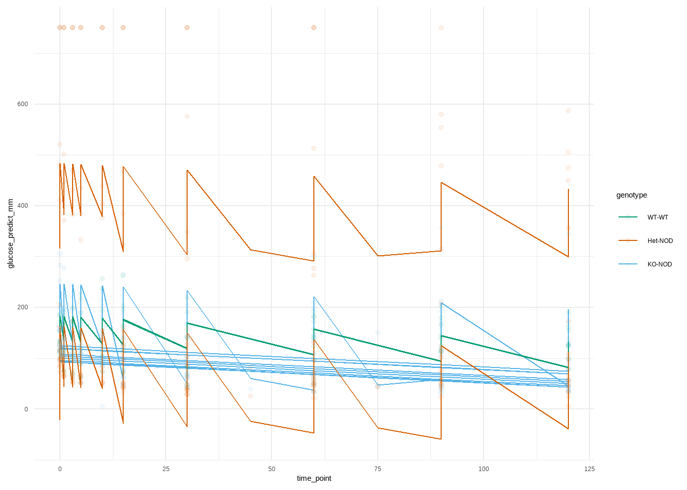

Mouse BW Test Week Genotype
Length:2424 Min. :16.60 Min. : 1.000 Length:2424
Class :character 1st Qu.:20.07 1st Qu.: 3.000 Class :character
Mode :character Median :22.55 Median : 6.000 Mode :character
Mean :22.24 Mean : 6.378
3rd Qu.:24.50 3rd Qu.: 9.000
Max. :26.20 Max. :12.000
NA's :1800 NA's :456
Sex Time Point Glucose Reading
Length:2424 Length:2424 Min. : 5.0
Class :character Class :character 1st Qu.: 68.0
Mode :character Mode :character Median :118.0
Mean :168.5
3rd Qu.:172.0
Max. :750.0
NA's :1959
# Removing Mouse and nan data values that were created during ChatGPT analysisIPGTT_data <- IPGTT_tidy_data_corrected %>%filter(Mouse !="Mouse")IPGTT_data <- IPGTT_data %>%filter(Mouse !="nan")# Removing all rows where there are no body weight AND glucose readingsIPGTT_data <- IPGTT_data %>%filter(!(is.na(BW) &is.na(`Glucose Reading`)))
Changing variable names according to Tidy Data guidelines
IPGTT_data$sex <-factor(IPGTT_data$sex)IPGTT_data$genotype <-factor(IPGTT_data$genotype, order =TRUE,levels =c("WT-WT", "Het-NOD", "KO-NOD"))# Checking to see if data type changedstr(IPGTT_data)
# Calculate average body weight and glucose reading by test_week and genotypemean_data <- IPGTT_data %>%group_by(test_week, genotype) %>%summarise(mean_body_weight =mean(body_weight, na.rm =TRUE))plot2 <-ggplot(mean_data, aes(x = test_week, y = mean_body_weight, color = genotype)) +geom_point() +geom_line(aes(x = test_week, y = mean_body_weight, color = genotype, group = genotype)) +geom_line(data = IPGTT_data, aes(x = test_week, y = body_weight, color = genotype, group = mouse_id), alpha =0.5)+theme_minimal()+scale_color_manual(values = color_palette) +labs(title ="Mean body weight over test weeks", x="Test Week", y ="Body Weight (g)", subtitle ="(All 12 weeks of data)")+theme(legend.position ="bottom")+scale_x_continuous(breaks=seq(0,12, by=1)) plotly_plot2 <-ggplotly(plot2, tooltip =c( "mouse_id", "test_week", "body_weight", "mean_body_weight")) %>%config(displayModeBar =FALSE) %>%layout(legend =list(orientation ="h", x =0.5, xanchor ="center", y =-0.2))plotly_plot2
#IPGTT trajectories overlaid with within-genotype mediansIPGTT_fil <- IPGTT_data %>%filter(!is.na(glucose_reading), test_week %in%1:4)median_data <- IPGTT_data %>%filter(!is.na(glucose_reading), test_week %in%1:4) %>%group_by(time_point, genotype, test_week) %>%summarise(median_glucose_reading =median(glucose_reading, na.rm =TRUE))plot1 <-ggplot(IPGTT_fil, aes(time_point, glucose_reading, color = genotype, group = mouse_id)) +geom_line(alpha =0.3) +geom_line(data = median_data, aes(x = time_point, y = median_glucose_reading, color = genotype, group = genotype)) +facet_wrap(~ test_week, ncol =4) +theme_minimal() +scale_x_continuous(breaks=seq(0,120, by=30)) +scale_color_manual(values = color_palette) +labs(title ="IPGTT trajectories overlaid with within-genotype medians", x="Test time (min)", y ="Blood glucose (mg/dL)", subtitle ="(First four weeks of data)") +theme(legend.position ="bottom", axis.text.x =element_text(angle =90))plotly_plot1 <-ggplotly(plot1, tooltip =c( "mouse_id", "time_point", "glucose_reading", "median_glucose_reading")) %>%config(displayModeBar =FALSE) %>%layout(legend =list(orientation ="h", x =0.5, xanchor ="center", y =-0.2))plotly_plot1
# Example usageweeks_list <-list(1:4, 5:8, 9:12)genotypes <-c("Het-NOD", "KO-NOD", "WT-WT")# Helper function to filter data for given weeks and genotypesfilter_data <-function(data, weeks, genotypes) { data %>%filter(!is.na(glucose_reading), test_week %in% weeks, genotype %in% genotypes)}# Helper function to calculate medians for the filtered datacalculate_medians <-function(data) { data %>%group_by(time_point, genotype, test_week) %>%summarise(median_glucose_reading =median(glucose_reading, na.rm =TRUE), .groups ='drop')}# Helper function to generate the plotgenerate_plot <-function(data, medians, weeks, genotypes, color_palette) { colored_title <-paste("<b>IPGTT trajectories for</b> ",paste(sprintf("<b><span style='color:%s;'>%s</span></b>", color_palette[genotypes], genotypes),collapse =" & " ),"<b>overlaid with within-genotype medians during weeks</b>",paste("<b>",weeks[1], "-",weeks[4], "</b>") ) plot <-ggplot(data, aes(time_point, glucose_reading, color = genotype, group = mouse_id)) +geom_line(alpha =0.3) +geom_line(data = medians, aes(x = time_point, y = median_glucose_reading, color = genotype, group = genotype)) +facet_wrap(~ test_week, ncol =length(weeks)) +theme_minimal() +scale_x_continuous(breaks =seq(0, 120, by =30)) +scale_color_manual(values = color_palette) +labs(title ="Placeholder", # Title will be overridden by plotly layoutx ="Test time (min)", y ="Blood glucose (mg/dL)" ) +theme(text =element_text(family ="Source"), legend.position ="none", axis.text.x =element_text(angle =90))ggplotly(plot, tooltip =c("mouse_id", "time_point", "glucose_reading", "median_glucose_reading")) %>%config(displayModeBar =FALSE) %>%layout(title =list(text = colored_title, font =list(size =15), x =0), legend =list(orientation ="h", x =0.5, xanchor ="center", y =-0.2),plot_bgcolor ="ivory", # Set the plot background color in plotlypaper_bgcolor ="ivory"# Set the paper background color in plotly )}# Main function to iterate over weeks and genotypes using purrrcreate_plots <-function(data, week_combinations, genotypes, color_palette) { genotype_combinations <-combn(genotypes, 2, simplify =FALSE)cross2(week_combinations, genotype_combinations) %>%map(~{ weeks <- .x[[1]] genotype_pair <- .x[[2]] filtered_data <-filter_data(data, weeks, genotype_pair) median_data <-calculate_medians(filtered_data)generate_plot(filtered_data, median_data, weeks, genotype_pair, color_palette) })}plots <-create_plots(IPGTT_data, weeks_list, genotypes, color_palette)#walk(plots, print)for(plot in plots){print(plot)}
ggplot(ipgtt_predicted_mm, aes(time_point, glucose_predict_mm, color = genotype, group = mouse_id)) +geom_line()+geom_point(data = IPGTT_data_clean, aes(time_point, glucose_reading), alpha =0.08) +theme_minimal() +scale_color_manual(values = color_palette)

emm <-emmeans(IPGTT_mixed_model, ~ time_point | test_week | genotype)# Convert the emmeans results to a data frame for plottingemm_df <-as.data.frame(emm)View(emm_df)# Plot the estimated marginal meansggplot(emm_df, aes(x = time_point, y = emmean, color = genotype, group = genotype)) +geom_line() +geom_point() +theme_minimal() +scale_color_manual(values = color_palette) +labs(title ="Estimated Marginal Means of Glucose Readings",x ="Time Point",y ="Estimated Marginal Mean Glucose Reading")
# Calculate contrastscontrast_emm <-contrast(emm, method ="pairwise", adjust ="tukey")# Convert contrasts to a data frame for plottingcontrast_df <-as.data.frame(contrast_emm)# Extract the necessary values for the error barscontrast_df <- contrast_df %>%mutate(lower.CL = estimate - SE,upper.CL = estimate + SE)#ggplot(contrast_df, aes(x = time_point, y = estimate, color = contrast, group = contrast)) +# geom_point() +# geom_errorbar(aes(ymin = estimate - SE, ymax = estimate + SE), width = 0.1) +# theme_minimal() +#labs(title = "Contrasts of Estimated Marginal Means",# x = "Time Point",# y = "Contrast Estimate")
# Remove rows with missing values for model fittingIPGTT_data_clean <-na.omit(IPGTT_data)# Step 1: Fit the mixed model on the original data including test_weekIPGTT_mixed_model <-lmer(glucose_reading ~ time_point + test_week + genotype + (1| mouse_id), data = IPGTT_data_clean)# Step 2: Calculate the estimated marginal means for each genotype by test_weekemm <-emmeans(IPGTT_mixed_model, ~ genotype | test_week | time_point)# Step 3: Calculate contrasts between genotype pairs for each test weekcontrast_results <-contrast(emm, interaction ="pairwise")# Convert the contrasts results to a data framecontrast_df <-as.data.frame(contrast_results)# Print the contrast results to checkprint(contrast_df)
View(contrast_df)# Step 4: Prepare for plotting the differences between genotype pairscontrast_df <- contrast_df %>%mutate(contrast =rownames(contrast_df)) # Create a new column for contrasts# Plot the contrastsggplot(contrast_df, aes(x = time_point, y = estimate, color = contrast, group = contrast)) +geom_line() +geom_point() +geom_errorbar(aes(ymin = estimate - SE, ymax = estimate + SE), width =0.1) +theme_minimal() +scale_color_manual(values = color_palette) +labs(title ="Differences in Estimated Marginal Means Between Genotypes by Test Week",x ="Time Point",y ="Contrast Estimate") +facet_wrap(~ test_week) # Facet by test_week